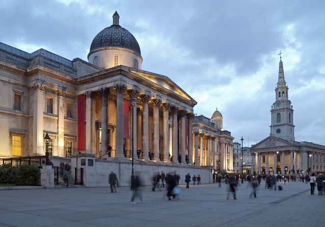
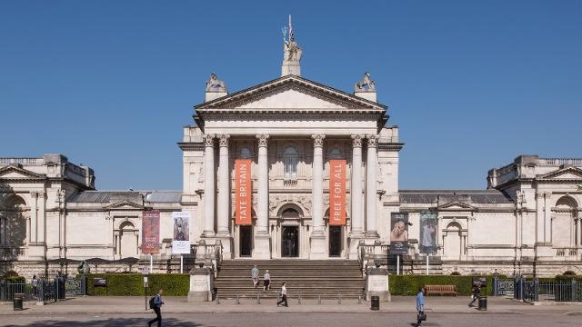
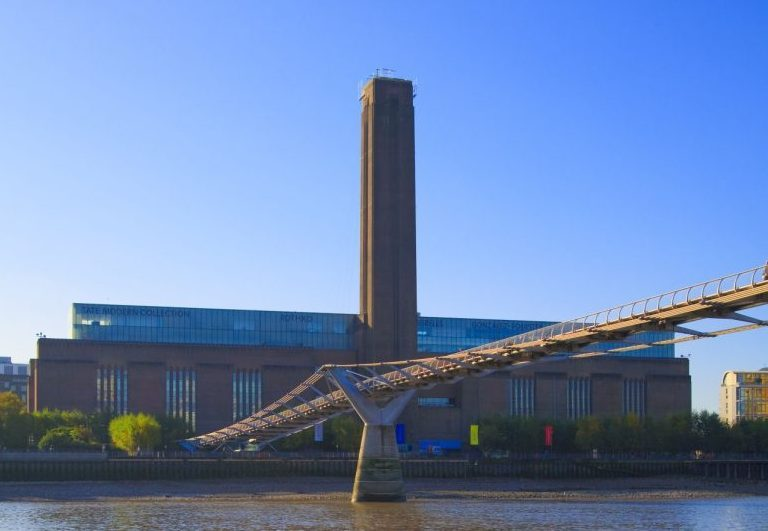
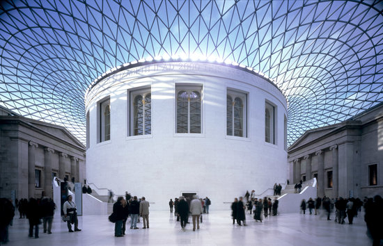
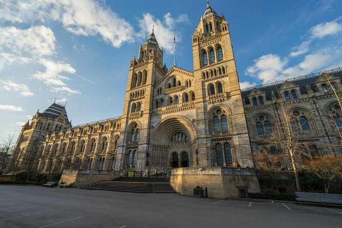
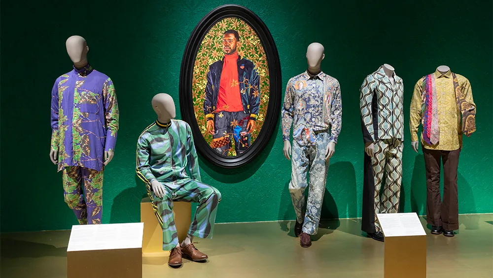
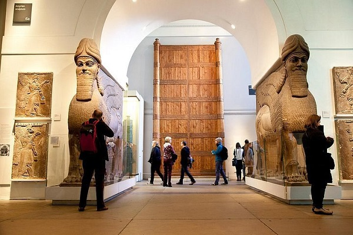
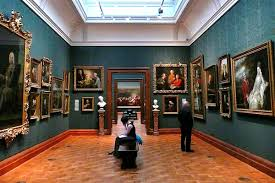
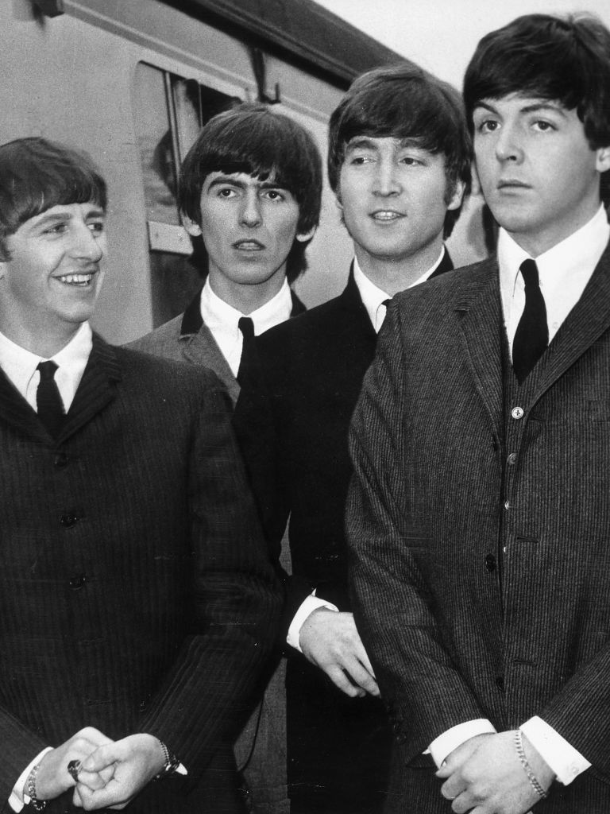

Culture
Écoles d’art dramatique, plus de 240 musées et une scène musicale parmi les plus influentes au monde.
Arts
Londres abrite de nombreuses écoles des arts du spectacle : la Central School of Speech and Drama, d’où sont sortis Judi Dench et Laurence Olivier, la London Academy of Music and Dramatic Art, où ont été formés Jim Broadbent et Donald Sutherland, ou encore la Royal Academy of Dramatic Art, qui compte Joan Collins et Roger Moore parmi ses anciens élèves. Le Festival du film de Londres, organisé par le British Film Institute, a lieu chaque année en octobre.
Musées
Londres possède certains des musées les plus importants au monde. On en compte 240 (contre 173 à Paris) entre musées, galeries et autres institutions. Beaucoup sont gratuits, attirent de nombreux touristes et jouent aussi un rôle dans la recherche.
Les plus beaux musées de Londres
La National Gallery
Difficile de ne pas tomber sous le charme de ce musée qui offre un panorama de l’histoire de la peinture européenne, du XIIIe au XIXe siècle. Ses quatre ailes présentent des toiles classées par thème.
Dans l’aile Sainsbury, consacrée aux débuts de la Renaissance (1250 à 1500), la plupart des toiles représentent des scènes bibliques, avec de nombreux peintres italiens. Tout au fond se trouve l’un des chefs-d’œuvre du musée : La Vierge aux rochers de Léonard de Vinci.

La Tate Britain
L’histoire de ce musée est un peu insolite : on le doit à l’inventeur du sucre en morceaux, Henry Tate (1819-1899), qui était aussi un grand collectionneur.
Il légua sa collection à l’État et finança la construction du musée, appelé d’abord National Gallery of British Art, à l’emplacement d’une ancienne prison. Ouvert en 1897, il prend vite le nom de Tate Gallery, puis devient la Tate Britain en 2000, lors de l’ouverture de la Tate Modern.

La Tate Modern
La collection Tate a continué de s’agrandir après la mort de son fondateur. Pour faire face à un fonds de plus en plus volumineux, la Tate Gallery a créé un nouveau musée dédié à l’art moderne : la Tate Modern.
Inaugurée en 2000 dans une ancienne centrale électrique, elle s’est agrandie en 2016 avec la Switch House, une tour de dix étages en forme d’origami. De là-haut, la vue sur Londres est magnifique.

Le British Museum
Sans doute l’un des musées les plus photographiés du monde, grâce à son architecture. Construit en 1847 dans un style néoclassique, il a été agrandi en 2000 avec une cour intérieure couverte d’une verrière imaginée par Norman Foster.
Ses collections rassemblent des objets et des sculptures de nombreuses civilisations. Parmi les incontournables : la pierre de Rosette, qui permit à Champollion de déchiffrer les hiéroglyphes, et les plus beaux fragments du Parthénon d’Athènes, rapportés de Grèce par Lord Elgin.

Le Natural History Museum
Effet garanti en entrant : le hall d’accueil, surplombé par le squelette d’une baleine, est très impressionnant.
Côté collections, la mise en scène mise davantage sur le divertissement, ce qui plaît beaucoup aux enfants et aux adolescents. On a parfois du mal à savoir quels spécimens sont vrais ou reconstitués.

Quel âge a ce musée ?
La National Gallery a ouvert en 1824, le British Museum en 1759. Entrez l’année d’ouverture d’un musée pour connaître son âge.
Galerie




Musique
Londres est l’une des capitales mondiales de la musique classique et de la pop-rock.
La musique classique est une forme de musique savante européenne qui respecte les règles et harmonies dites classiques, de la seconde moitié du XVIIIe siècle aux premières décennies du XIXe siècle, par opposition notamment aux styles baroques, romantiques ou modernes.
Le terme « musique pop » (pop music) apparaît en Angleterre vers 1955 pour décrire le rock ’n’ roll et les nouveaux styles musicaux des jeunes influencés par celui-ci. Par la suite, le mot « pop » (parfois « pop rock ») désigne un sous-genre apparu dans les années 1950-1960.
